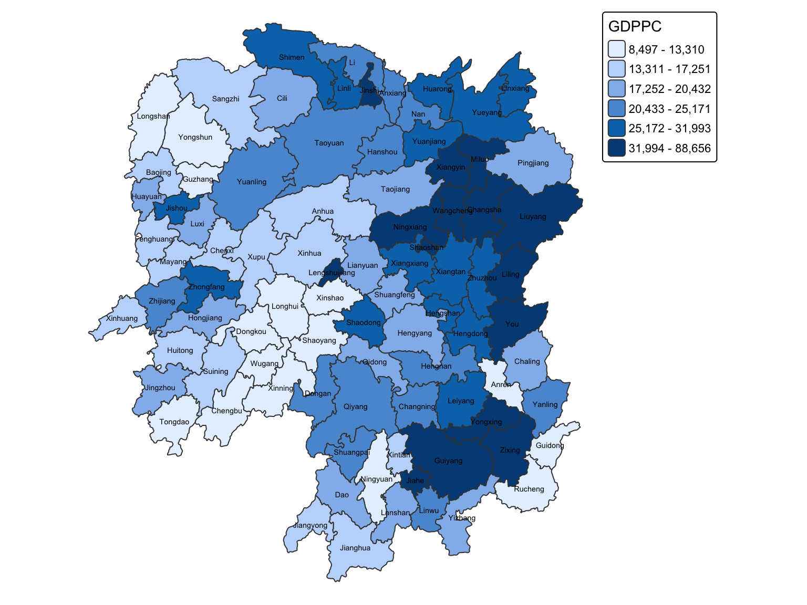
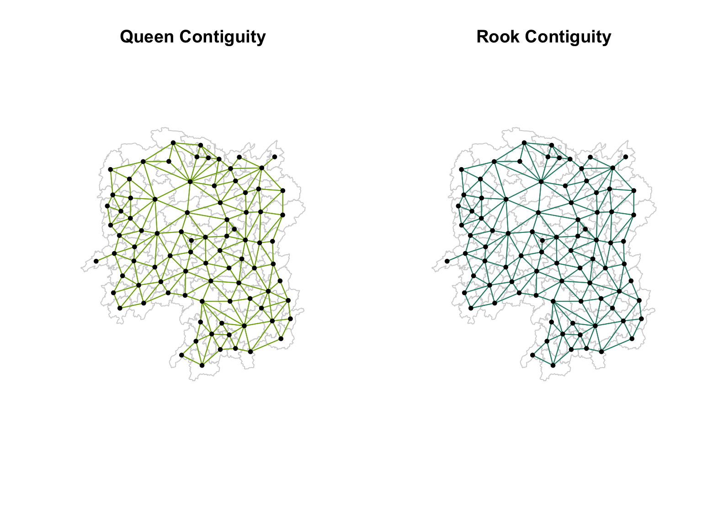
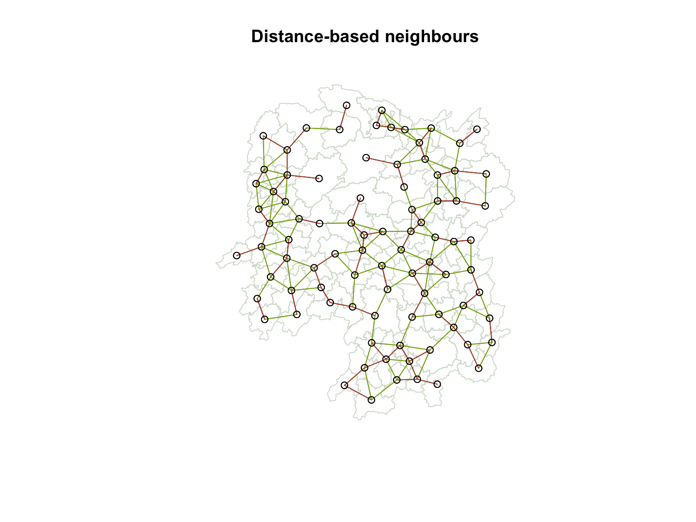
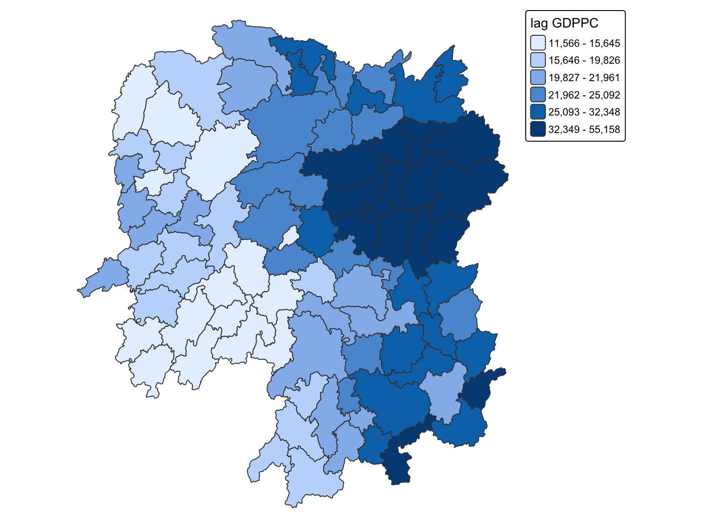
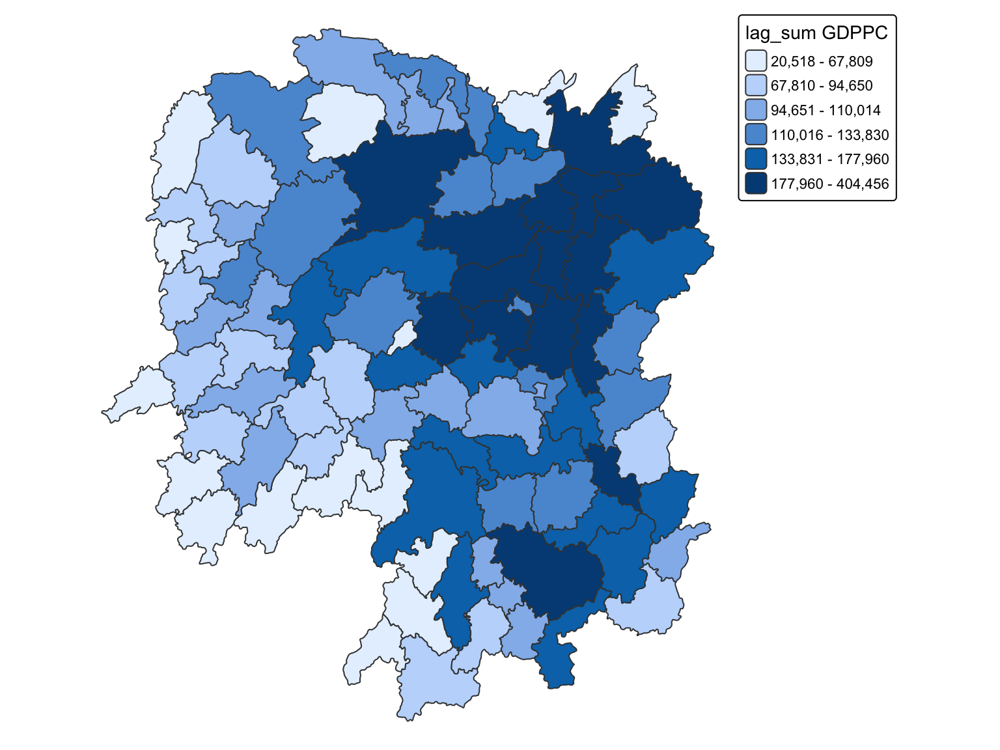
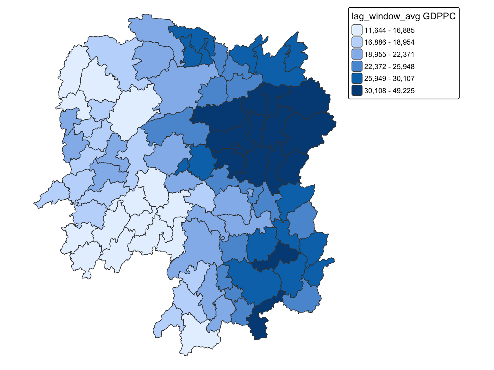
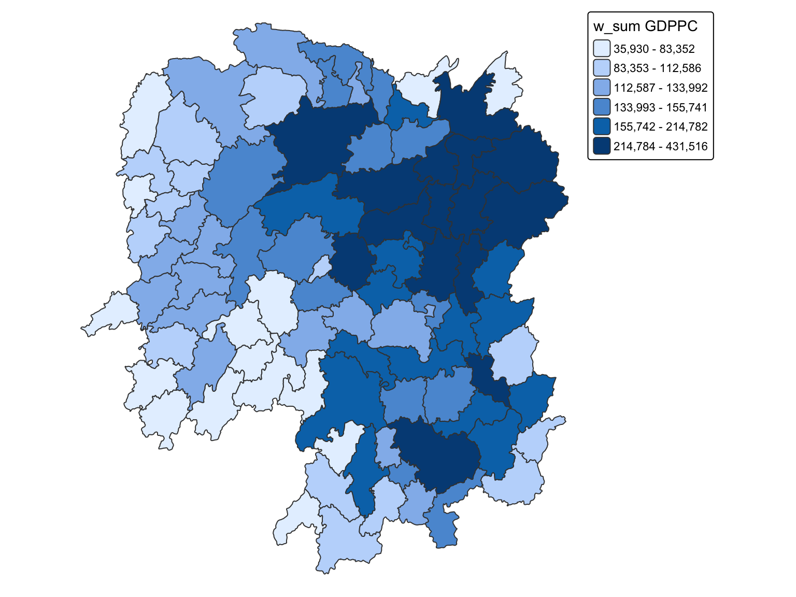

pacman::p_load(sf, spdep, tmap, tidyverse, knitr)Spatial Weights and Applications
Hands-on Exercise 4
1 Overview
This exercise uses the 88 county-level units in Hunan to define who is considered a neighbour. I use GDP per capita as the example indicator and follow the workflow from importing the data to calculating spatially lagged values.
The main questions I keep in mind are:
- How does the definition of a neighbour change the weight matrix?
- How does a county’s surrounding GDP per capita compare with its own value?
- What changes when the focal county is included in its own spatial window?
NoteLocal data note
The supplied data4.zip contains the same Hunan boundary and 2012 indicator table used in the course example. The files are stored locally under Hands-on_Ex04/data/, so every rendered result on this page is generated from the repository rather than an absolute computer path.
2 Getting the Data Into R
2.1 Loading packages
The original package-loading command is kept here for reference.
library(sf)
library(spdep)
library(tmap)
library(tidyverse)
library(knitr)2.2 Importing the boundary
hunan <- st_read(dsn = "chap08/data/geospatial",
layer = "Hunan")hunan <- st_read(
dsn = "data/geospatial",
layer = "Hunan",
quiet = TRUE
)
hunanSimple feature collection with 88 features and 7 fields
Geometry type: POLYGON
Dimension: XY
Bounding box: xmin: 108.7831 ymin: 24.6342 xmax: 114.2544 ymax: 30.12812
Geodetic CRS: WGS 84
First 10 features:
NAME_2 ID_3 NAME_3 ENGTYPE_3 Shape_Leng Shape_Area County
1 Changde 21098 Anxiang County 1.869074 0.10056190 Anxiang
2 Changde 21100 Hanshou County 2.360691 0.19978745 Hanshou
3 Changde 21101 Jinshi County City 1.425620 0.05302413 Jinshi
4 Changde 21102 Li County 3.474325 0.18908121 Li
5 Changde 21103 Linli County 2.289506 0.11450357 Linli
6 Changde 21104 Shimen County 4.171918 0.37194707 Shimen
7 Changsha 21109 Liuyang County City 4.060579 0.46016789 Liuyang
8 Changsha 21110 Ningxiang County 3.323754 0.26614198 Ningxiang
9 Changsha 21111 Wangcheng County 2.292093 0.13049161 Wangcheng
10 Chenzhou 21112 Anren County 2.240739 0.13343936 Anren
geometry
1 POLYGON ((112.0625 29.75523...
2 POLYGON ((112.2288 29.11684...
3 POLYGON ((111.8927 29.6013,...
4 POLYGON ((111.3731 29.94649...
5 POLYGON ((111.6324 29.76288...
6 POLYGON ((110.8825 30.11675...
7 POLYGON ((113.9905 28.5682,...
8 POLYGON ((112.7181 28.38299...
9 POLYGON ((112.7914 28.52688...
10 POLYGON ((113.1757 26.82734...2.3 Importing the indicator table
hunan2012 <- read_csv("chap08/data/aspatial/Hunan_2012.csv")hunan2012 <- read_csv("data/aspatial/Hunan_2012.csv", show_col_types = FALSE)2.4 Joining the attributes
hunan <- left_join(hunan,hunan2012) %>%
select(1:4, 7, 15)hunan <- left_join(hunan, hunan2012, by = "County") %>%
select(1:4, 7, 15)
tibble(
counties = nrow(hunan),
indicator = "GDP per capita",
missing_gdppc = sum(is.na(hunan$GDPPC)),
source_crs = st_crs(hunan)$input
)# A tibble: 1 × 4
counties indicator missing_gdppc source_crs
<int> <chr> <int> <chr>
1 88 GDP per capita 0 WGS 84
TipWhat I noticed
The join keeps one row for each county and adds GDPPC to the spatial layer. The geometry is still in WGS 84, which is suitable for this first map. I keep a projected copy for distance-based calculations later in the page.
3 Visualising Regional Development
basemap <- tm_shape(hunan) +
tm_polygons() +
tm_text("NAME_3", size=0.5)
gdppc <- qtm(hunan, "GDPPC") +
tm_layout(
legend.position = c("left", "bottom"))
tmap_arrange(basemap, gdppc, asp=1, ncol=2)tm_shape(hunan) +
tm_polygons(
fill = "GDPPC",
fill.scale = tm_scale_intervals(n = 6, style = "quantile"),
fill.legend = tm_legend(title = "GDPPC")
) +
tm_text("NAME_3", size = 0.45) +
tm_layout(frame = FALSE)
TipMy observation
The highest GDPPC values are concentrated around a small number of counties, while many western and southern counties sit in lower classes. The map gives the variable a spatial shape, yet it does not tell me whether neighbouring counties are similar enough to support a clustering claim. That is the reason for constructing weights before calculating autocorrelation statistics.
4 Contiguity Spatial Weights
4.1 Queen neighbours
wm_q <- poly2nb(hunan, queen=TRUE)
summary(wm_q)wm_q <- poly2nb(hunan, queen = TRUE)
queen_summary <- summary(wm_q)
queen_summaryNeighbour list object:
Number of regions: 88
Number of nonzero links: 448
Percentage nonzero weights: 5.785124
Average number of links: 5.090909
Link number distribution:
1 2 3 4 5 6 7 8 9 11
2 2 12 16 24 14 11 4 2 1
2 least connected regions:
30 65 with 1 link
1 most connected region:
85 with 11 linkswm_q[[1]]wm_q[[1]][1] 2 3 4 57 85hunan$County[1]hunan$County[1][1] "Anxiang"hunan$NAME_3[c(2,3,4,57,85)]hunan$NAME_3[wm_q[[1]]][1] "Hanshou" "Jinshi" "Li" "Nan" "Taoyuan"nb1 <- wm_q[[1]]
nb1 <- hunan$GDPPC[nb1]
nb1queen_gdppc <- tibble(
county = hunan$NAME_3[wm_q[[1]]],
GDPPC = hunan$GDPPC[wm_q[[1]]]
)
queen_gdppc# A tibble: 5 × 2
county GDPPC
<chr> <dbl>
1 Hanshou 20981
2 Jinshi 34592
3 Li 24473
4 Nan 21311
5 Taoyuan 22879str(wm_q)4.2 Rook neighbours
wm_r <- poly2nb(hunan, queen=FALSE)
summary(wm_r)wm_r <- poly2nb(hunan, queen = FALSE)
rook_summary <- summary(wm_r)
rook_summaryNeighbour list object:
Number of regions: 88
Number of nonzero links: 440
Percentage nonzero weights: 5.681818
Average number of links: 5
Link number distribution:
1 2 3 4 5 6 7 8 9 10
2 2 12 20 21 14 11 3 2 1
2 least connected regions:
30 65 with 1 link
1 most connected region:
85 with 10 links
TipWhat I noticed
Queen contiguity counts a shared corner as a connection. Rook contiguity requires a shared boundary segment, so it usually produces fewer links. The choice changes the question: Queen captures broader contact, while Rook focuses on direct edge-sharing neighbours.
4.3 Visualising contiguity
longitude <- map_dbl(hunan$geometry, ~st_centroid(.x)[[1]])latitude <- map_dbl(hunan$geometry, ~st_centroid(.x)[[2]])coords <- cbind(longitude, latitude)
head(coords)centroids <- st_centroid(hunan)
coords <- st_coordinates(centroids)
head(coords) X Y
[1,] 112.1531 29.44346
[2,] 112.0371 28.86480
[3,] 111.8918 29.47097
[4,] 111.7035 29.74504
[5,] 111.6139 29.49243
[6,] 111.0347 29.79855plot(hunan$geometry, border="lightgrey")
plot(wm_q, coords, pch = 19, cex = 0.6, add = TRUE, col= "red")plot(hunan$geometry, border="lightgrey")
plot(wm_r, coords, pch = 19, cex = 0.6, add = TRUE, col = "red")par(mfrow = c(1, 2))
plot(hunan$geometry, border = "lightgrey", main = "Queen Contiguity")
plot(wm_q, coords, pch = 19, cex = 0.6, add = TRUE, col = "#7fae15")
plot(hunan$geometry, border = "lightgrey", main = "Rook Contiguity")
plot(wm_r, coords, pch = 19, cex = 0.6, add = TRUE, col = "#2b8c76")
par(mfrow = c(1, 1))5 Distance-Based Neighbours
5.1 Checking the cut-off
The original exercise checks the nearest-neighbour distances with geographic coordinates.
#coords <- coordinates(hunan)
k1 <- knn2nb(knearneigh(coords))
k1dists <- unlist(nbdists(k1, coords, longlat = TRUE))
summary(k1dists)hunan_m <- st_transform(hunan, 32650)
coords_m <- st_coordinates(st_centroid(hunan_m))
k1_m <- knn2nb(knearneigh(coords_m))
k1dists_m <- unlist(nbdists(k1_m, coords_m, longlat = FALSE))
summary(k1dists_m) Min. 1st Qu. Median Mean 3rd Qu. Max.
24845 32677 38110 38998 44639 58635 wm_d62 <- dnearneigh(coords, 0, 62, longlat = TRUE)
wm_d62wm_d62 <- dnearneigh(coords_m, 0, 62000, longlat = FALSE)
wm_d62Neighbour list object:
Number of regions: 88
Number of nonzero links: 318
Percentage nonzero weights: 4.106405
Average number of links: 3.613636 str(wm_d62)distance_counts <- tibble(
county = hunan$NAME_3,
neighbours = card(wm_d62)
)
distance_counts %>%
summarise(
counties = n(),
min_neighbours = min(neighbours),
max_neighbours = max(neighbours),
mean_neighbours = mean(neighbours),
disconnected = sum(neighbours == 0)
)# A tibble: 1 × 5
counties min_neighbours max_neighbours mean_neighbours disconnected
<int> <int> <int> <dbl> <int>
1 88 1 6 3.61 0n_comp <- n.comp.nb(wm_d62)
n_comp$nc
table(n_comp$comp.id)n_comp <- n.comp.nb(wm_d62)
tibble(
components = n_comp$nc,
largest_component = max(table(n_comp$comp.id)),
smallest_component = min(table(n_comp$comp.id))
)# A tibble: 1 × 3
components largest_component smallest_component
<dbl> <int> <int>
1 1 88 88plot(hunan$geometry, border="lightgrey")
plot(wm_d62, coords, add=TRUE)
plot(k1, coords, add=TRUE, col="red", length=0.08)plot(st_geometry(hunan_m), border = "#d5ded2", main = "Distance-based neighbours")
plot(wm_d62, coords_m, add = TRUE, col = "#8aae1b")
plot(k1_m, coords_m, add = TRUE, col = "#b54b4b", length = 0.08)
5.2 Adaptive neighbours
knn6 <- knn2nb(knearneigh(coords, k=6))
knn6
str(knn6)
plot(hunan$geometry, border="lightgrey")
plot(knn6, coords, pch = 19, cex = 0.6, add = TRUE, col = "red")knn6_m <- knn2nb(knearneigh(coords_m, k = 6))
tibble(
counties = length(knn6_m),
links = sum(card(knn6_m)),
neighbours_per_county = unique(card(knn6_m))
)# A tibble: 1 × 3
counties links neighbours_per_county
<int> <int> <int>
1 88 528 6
TipMy observation
The distance rule uses one global radius, so dense and sparse parts of the province can receive very different numbers of neighbours. The six-nearest-neighbour rule keeps the neighbour count stable and gives every county a comparable local sample. It changes the meaning of proximity from a fixed geography to a fixed amount of information.
6 Weights Based on Inverse Distance
dist <- nbdists(wm_q, coords, longlat = TRUE)
ids <- lapply(dist, function(x) 1/(x))
idsdist_m <- nbdists(wm_q, coords_m, longlat = FALSE)
ids_m <- lapply(dist_m, function(x) 1 / x)
summary(unlist(ids_m)) Min. 1st Qu. Median Mean 3rd Qu. Max.
8.191e-06 1.504e-05 1.872e-05 1.955e-05 2.277e-05 4.025e-05 7 Row-Standardised Weights
rswm_q <- nb2listw(wm_q, style="W", zero.policy = TRUE)
rswm_qrswm_q <- nb2listw(wm_q, style = "W", zero.policy = TRUE)
rswm_qCharacteristics of weights list object:
Neighbour list object:
Number of regions: 88
Number of nonzero links: 448
Percentage nonzero weights: 5.785124
Average number of links: 5.090909
Weights style: W
Weights constants summary:
n nn S0 S1 S2
W 88 7744 88 37.86334 365.9147rswm_q$weights[10]rswm_q$weights[[1]][1] 0.2 0.2 0.2 0.2 0.2rswm_ids <- nb2listw(wm_q, glist=ids, style="B", zero.policy=TRUE)
rswm_idsrswm_ids_m <- nb2listw(wm_q, glist = ids_m, style = "B", zero.policy = TRUE)
summary(unlist(rswm_ids_m$weights)) Min. 1st Qu. Median Mean 3rd Qu. Max.
8.191e-06 1.504e-05 1.872e-05 1.955e-05 2.277e-05 4.025e-05
TipWhat I noticed
Row-standardisation makes each county’s neighbour contributions sum to one. A county with five neighbours gives each one-fifth of the total weight, while a county with two neighbours gives each one-half. This creates an average-like spatial lag and prevents counties with many neighbours from automatically dominating the calculation.
8 Applying Spatial Weight Matrices
8.1 Spatial lag with row-standardised weights
GDPPC.lag <- lag.listw(rswm_q, hunan$GDPPC)
GDPPC.laghunan[["lag GDPPC"]] <- lag.listw(rswm_q, hunan$GDPPC)
hunan %>%
st_drop_geometry() %>%
select(County, GDPPC, `lag GDPPC`) %>%
slice_head(n = 10) County GDPPC lag GDPPC
1 Anxiang 23667 24847.20
2 Hanshou 20981 22724.80
3 Jinshi 34592 24143.25
4 Li 24473 27737.50
5 Linli 25554 27270.25
6 Shimen 27137 21248.80
7 Liuyang 63118 43747.00
8 Ningxiang 62202 33582.71
9 Wangcheng 70666 45651.17
10 Anren 12761 32027.62lag.list <- list(hunan$NAME_3, lag.listw(rswm_q, hunan$GDPPC))
lag.res <- as.data.frame(lag.list)
colnames(lag.res) <- c("NAME_3", "lag GDPPC")
hunan <- left_join(hunan,lag.res)tm_shape(hunan) +
tm_polygons(fill = "lag GDPPC", fill.scale = tm_scale_intervals(n = 6, style = "quantile")) +
tm_layout(frame = FALSE)
8.2 Spatial lag as a sum of neighbouring values
b_weights <- lapply(wm_q, function(x) 0*x + 1)
b_weights2 <- nb2listw(wm_q,
glist = b_weights,
style = "B")
b_weights2b_weights <- lapply(wm_q, function(x) 0 * x + 1)
b_weights2 <- nb2listw(wm_q, glist = b_weights, style = "B")
hunan[["lag_sum GDPPC"]] <- lag.listw(b_weights2, hunan$GDPPC)
hunan %>%
st_drop_geometry() %>%
select(County, GDPPC, `lag_sum GDPPC`) %>%
slice_head(n = 10) County GDPPC lag_sum GDPPC
1 Anxiang 23667 124236
2 Hanshou 20981 113624
3 Jinshi 34592 96573
4 Li 24473 110950
5 Linli 25554 109081
6 Shimen 27137 106244
7 Liuyang 63118 174988
8 Ningxiang 62202 235079
9 Wangcheng 70666 273907
10 Anren 12761 256221lag_sum <- list(hunan$NAME_3, lag.listw(b_weights2, hunan$GDPPC))
lag.res <- as.data.frame(lag_sum)
colnames(lag.res) <- c("NAME_3", "lag_sum GDPPC")tm_shape(hunan) +
tm_polygons(fill = "lag_sum GDPPC", fill.scale = tm_scale_intervals(n = 6, style = "quantile")) +
tm_layout(frame = FALSE)
8.3 Spatial window average
wm_qs <- include.self(wm_q)
wm_qs[[1]]
wm_qs <- nb2listw(wm_qs)
wm_qswm_qs <- include.self(wm_q)
wm_qs_listw <- nb2listw(wm_qs, style = "W", zero.policy = TRUE)
hunan[["lag_window_avg GDPPC"]] <- lag.listw(wm_qs_listw, hunan$GDPPC)
hunan %>%
st_drop_geometry() %>%
select(County, `lag GDPPC`, `lag_window_avg GDPPC`) %>%
slice_head(n = 10) %>%
kable()| County | lag GDPPC | lag_window_avg GDPPC |
|---|---|---|
| Anxiang | 24847.20 | 24650.50 |
| Hanshou | 22724.80 | 22434.17 |
| Jinshi | 24143.25 | 26233.00 |
| Li | 27737.50 | 27084.60 |
| Linli | 27270.25 | 26927.00 |
| Shimen | 21248.80 | 22230.17 |
| Liuyang | 43747.00 | 47621.20 |
| Ningxiang | 33582.71 | 37160.12 |
| Wangcheng | 45651.17 | 49224.71 |
| Anren | 32027.62 | 29886.89 |
tm_shape(hunan) +
tm_polygons(fill = "lag_window_avg GDPPC", fill.scale = tm_scale_intervals(n = 6, style = "quantile")) +
tm_layout(frame = FALSE)
8.4 Spatial window sum
wm_qs <- include.self(wm_q)
b_weights <- lapply(wm_qs, function(x) 0*x + 1)
b_weights2 <- nb2listw(wm_qs,
glist = b_weights,
style = "B")
w_sum_gdppc <- lag.listw(b_weights2, hunan$GDPPC)wm_qs <- include.self(wm_q)
self_binary <- lapply(wm_qs, function(x) 0 * x + 1)
self_binary_listw <- nb2listw(wm_qs, glist = self_binary, style = "B")
hunan[["w_sum GDPPC"]] <- lag.listw(self_binary_listw, hunan$GDPPC)
hunan %>%
st_drop_geometry() %>%
select(County, `lag_sum GDPPC`, `w_sum GDPPC`) %>%
slice_head(n = 10) %>%
kable()| County | lag_sum GDPPC | w_sum GDPPC |
|---|---|---|
| Anxiang | 124236 | 147903 |
| Hanshou | 113624 | 134605 |
| Jinshi | 96573 | 131165 |
| Li | 110950 | 135423 |
| Linli | 109081 | 134635 |
| Shimen | 106244 | 133381 |
| Liuyang | 174988 | 238106 |
| Ningxiang | 235079 | 297281 |
| Wangcheng | 273907 | 344573 |
| Anren | 256221 | 268982 |
tm_shape(hunan) +
tm_polygons(fill = "w_sum GDPPC", fill.scale = tm_scale_intervals(n = 6, style = "quantile")) +
tm_layout(frame = FALSE)
TipMy observation
The row-standardised lag is comparable across counties because it averages the neighbours. The binary lag sum is larger in places with more neighbours, so it measures the total surrounding GDPPC rather than a typical neighbour. Adding the focal county to the window moves the result closer to a local context measure that includes both the county and its immediate surroundings.
9 Final Takeaway
The weight matrix is part of the analysis question. Queen and Rook describe different forms of contact, fixed-distance and k-nearest-neighbour rules describe different forms of proximity, and row-standardised or binary weights produce different meanings for a spatial lag.
For this Hunan example, GDPPC appears geographically uneven in the map and the neighbouring values are structured enough to justify checking spatial autocorrelation in the next exercise. I would report the selected neighbour rule with the statistic because the result is not independent of that modelling choice.
TipBeyond the Code: The Weight Matrix Is an Assumption
I initially treated a neighbour as a simple yes-or-no relationship. The calculations made the assumption more visible: the same GDPPC values can produce different lag surfaces when I change Queen to Rook, use a distance threshold, or standardise each row. A spatial statistic is therefore not only a property of the data. It is also a property of how local context is defined.
10 References
- Course source: Spatial Weights and Applications
spdepdocumentation: Creating neighbours using sf objects